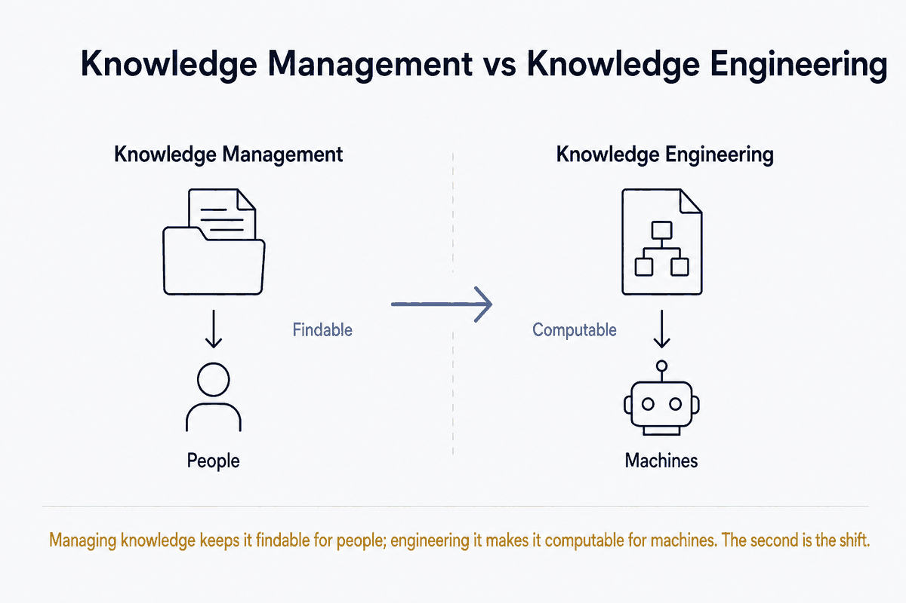

Managing knowledge keeps it findable for people; engineering it makes it computable for machines. The second is the shift.

Two disciplines that both deal with knowledge, easily confused, but aimed at different readers. Knowledge management organizes knowledge for people; knowledge engineering formalizes knowledge for machines. KM makes knowledge findable and shareable; KE makes it computable and inferrable.
Knowledge management (KM) organizes, stores, and makes findable the knowledge that already exists. Its question: how does the right knowledge reach the right person at the right moment? Its tools are document management, wikis, search, taxonomies, "who knows what." The knowledge stays largely human-readable; a person interprets and applies it.
Knowledge engineering (KE) formalizes knowledge so a system can reason over it. Its question: how do we represent knowledge explicitly enough that a machine can draw conclusions from it? Its tools are ontologies, knowledge graphs, rules, schemas — knowledge encoded in a form logic can run on. Rooted historically in expert systems; alive today in knowledge graphs, semantic models, and structured data both people and machines reason over.
The boundary isn't hard, which is the source of the confusion. Both concern knowledge and often share artefacts (taxonomies, metadata, schemas). The difference is intent and form: is it captured so a human retrieves it (KM), or encoded so a system reasons over it (KE)? A tag on a document is KM. An ontology stating "every invoice belongs to exactly one supplier, and a supplier has a KvK number" is KE — the second lets a machine infer things never literally written down.
This vault straddles the two, and the KE side is the distinctive part.
The KM layer is everything that organizes and surfaces: folder notes, search, the mobile read-only vault, self-hosted document search, knowledge bites resurfaced through Continuous Learning. Capture, order, retrieve, share.
The KE layer is subtler but real, and it's where the data-modelling craft enters. The per-type frontmatter schemas are a light form of knowledge engineering: declaring "a receipt always has these fields, a supplier has a KvK number, a book has an ISBN" formalizes knowledge into a structure a machine can reason over. The DuckDB Analysis Layer is where that becomes computable — the frontmatter is a latent data model, and modelling that schema is knowledge engineering in miniature. Dimensional modelling and universal data models are, precisely, KE skills: formalizing meaning into structure.
The positioning follows. SBM ("Structure Beats Magic") leans toward knowledge engineering, while most of the "second brain" / PKM world is pure knowledge management — capture and retrieval for a human. The distinctive angle is bringing KE thinking (data models, ontological clarity, schemas) into a space that usually does only KM. That's why this vault has schema-bearing sidecars and a DuckDB layer where the average setup has neither.
The distinction sharpens the company-brains offering. A company brain doing only KM is a searchable document bin. A company brain that adds KE — formalized schemas, relationships, inferrable knowledge — is a system both people and AI can reason over. The second is far more valuable, and it's exactly what a data architect can deliver where a generic KM consultant cannot. It's also what makes a knowledge base genuinely AI-ready: reasoning needs structure, and structure is what KE supplies.